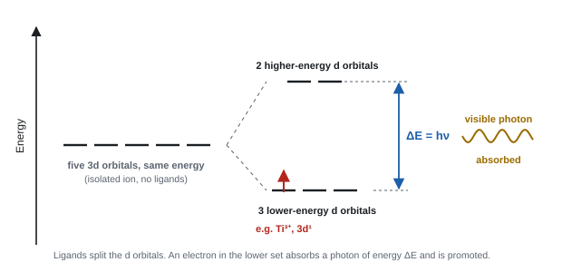
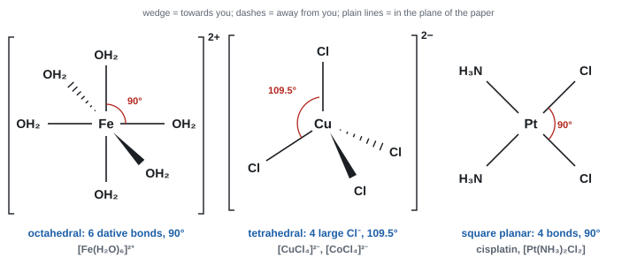
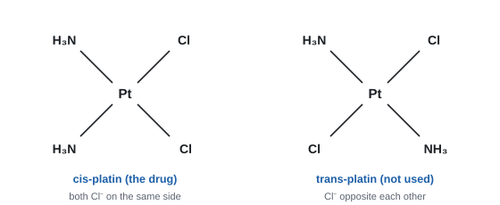
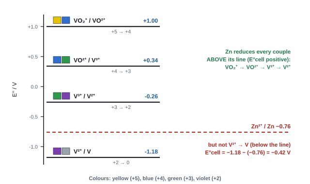
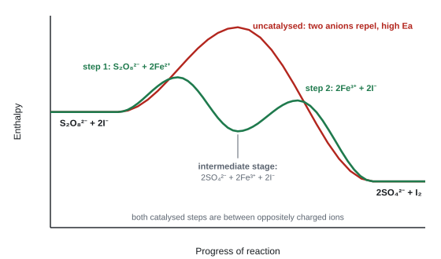
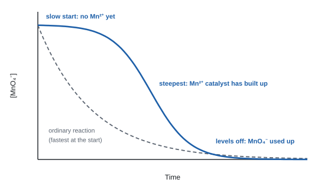

Transition metals and their chemistry
Copper sulfate is blue, potassium manganate(VII) purple, and iron catalyses the Haber process. These properties all come from one feature of the transition metals: an incomplete set of d electrons. This topic explains complex ions, their shapes and colours, the many oxidation states of vanadium and chromium, the reactions of metal aqua ions, and how transition metals act as catalysts.
Spec17.1What makes a transition metal
Know that transition metals are d-block elements forming one or more stable ions with incompletely filled d-orbitals.
A transition metal is a d-block element that forms at least one stable ion with an incomplete d subshell (between 1 and 9 d electrons).
- d-block element: its highest-energy electron goes into a d subshell. For Period 4, that is scandium to zinc.
- Not every d-block element is a transition metal. The test is about the ions, not the atom.
| Element | Only stable ion | d electrons | Transition metal? |
|---|---|---|---|
| Scandium | Sc³⁺ = [Ar] | 3d⁰ (empty) | No |
| Titanium to copper | e.g. Ti³⁺ 3d¹, Fe²⁺ 3d⁶, Cu²⁺ 3d⁹ | partly filled | Yes |
| Zinc | Zn²⁺ = [Ar]3d¹⁰ | 3d¹⁰ (full) | No |
- Copper counts even though Cu⁺ is 3d¹⁰, because Cu²⁺ (3d⁹) has an incomplete d subshell. One such ion is enough.
- Typical transition-metal properties all come from that partly filled d subshell: variable oxidation states, coloured ions, complex formation and catalytic activity.
- Mercury: "Hg⁺ is [Xe]4f¹⁴5d¹⁰6s¹ and Hg²⁺ is [Xe]4f¹⁴5d¹⁰"; "d-block element as the last electron goes into a (5)d orbital"; "not a transition element as Hg⁺ and Hg²⁺ do not have incompletely filled d orbitals" (WCH15 Jun 2023).
- DO NOT ACCEPT an answer based only on the atom's configuration. Use "d orbitals" (plural) or "d subshell".
- Nickel "forms stable ions with partially filled d orbitals" (WCH15 Jan 2021).
Often asked as: is Zn / Sc / Hg a transition metal? (use the configurations of the ions); MCQs on the definition.
Defining a transition metal by the atom ("it has d electrons") instead of by its ions.
Not explaining what "d-block" means when asked (WCH15 Jun 2023 examiner report).
Examined in past papers even though the spec doesn't list it.
Applying the definition to 4d and 5d metals (Ag⁺ is [Kr]4d¹⁰; Hg²⁺ is [Xe]4f¹⁴5d¹⁰), so neither forms a coloured simple ion (WCH15 Jan 2022; Jun 2023).
Spec17.2Electronic configurations of Sc–Zn and their ions
Deduce the electronic configurations of the atoms and ions of Sc to Zn from atomic number and charge.
Rules
- 4s fills before 3d (4s is lower in energy in the empty atom).
- Chromium and copper are exceptions: Cr is [Ar]3d⁵4s¹ and Cu is [Ar]3d¹⁰4s¹. A half-full or full d subshell is especially stable.
- When the atom forms an ion, 4s electrons are lost first, before any 3d electrons.
| Atom | Common ions | |
|---|---|---|
| Sc (21) | [Ar]3d¹4s² | Sc³⁺ [Ar] |
| Ti (22) | [Ar]3d²4s² | Ti³⁺ [Ar]3d¹; Ti⁴⁺ [Ar] |
| V (23) | [Ar]3d³4s² | V³⁺ [Ar]3d²; V²⁺ [Ar]3d³ |
| Cr (24) | [Ar]3d⁵4s¹ | Cr³⁺ [Ar]3d³; Cr²⁺ [Ar]3d⁴ |
| Mn (25) | [Ar]3d⁵4s² | Mn²⁺ [Ar]3d⁵ |
| Fe (26) | [Ar]3d⁶4s² | Fe²⁺ [Ar]3d⁶; Fe³⁺ [Ar]3d⁵ |
| Co (27) | [Ar]3d⁷4s² | Co²⁺ [Ar]3d⁷ |
| Ni (28) | [Ar]3d⁸4s² | Ni²⁺ [Ar]3d⁸ |
| Cu (29) | [Ar]3d¹⁰4s¹ | Cu⁺ [Ar]3d¹⁰; Cu²⁺ [Ar]3d⁹ |
| Zn (30) | [Ar]3d¹⁰4s² | Zn²⁺ [Ar]3d¹⁰ |
Worked example: Mn³⁺ and Fe³⁺
Mn is 25: [Ar]3d⁵4s². Remove 3 electrons: the two 4s first, then one 3d → Mn³⁺ = [Ar]3d⁴.
Fe is 26: [Ar]3d⁶4s². Remove 3: 4s², then one 3d → Fe³⁺ = [Ar]3d⁵.
Electrons-in-boxes
- Each box is one orbital. Fill each 3d box singly first with parallel spins, then pair up with opposite spins.
- Fe²⁺ (3d⁶): five boxes, the first holding a pair (↑↓) and the other four single (↑). The 4s box is empty.
- "[Ar]3d⁵" for Fe³⁺ and Mn²⁺; "[Ar]3d⁶" for Fe²⁺; "[Ar]3d¹⁰" for Zn²⁺ and Cu⁺.
- Boxes: half-arrows accepted; "allow all arrows pointing downwards" in the 3d subshell, but two arrows in one orbital must point opposite ways (WCH15 Jan 2025).
Often asked as: MCQ on a configuration; complete the boxes for an atom and its ion; evidence from successive ionisation energies.
Removing 3d electrons before 4s, or leaving 4s occupied in Fe²⁺ (WCH15 Jan 2025 examiner report). Writing 3d for silver instead of 4d (WCH15 Jan 2022 examiner report).
Spec17.3Why transition metals have variable oxidation numbers
Understand why transition metals show variable oxidation numbers.
The reason
- The 4s and 3d subshells have similar energies.
- So after the 4s electrons are lost, the 3d electrons can be lost too without a huge jump in ionisation energy. Successive ionisation energies rise gradually, with no big jump until all 4s and 3d electrons are gone.
- Losing a different number of electrons gives a different ion. The energy needed is paid back by lattice energy, hydration energy or covalent bonding, so several oxidation states can be stable.
- The maximum oxidation state up to Mn equals the total of 4s + 3d electrons: V +5 (3d³4s²), Cr +6, Mn +7.
| Metal | Common oxidation states |
|---|---|
| Ti | +2, +3, +4 |
| V | +2, +3, +4, +5 |
| Cr | +2, +3, +6 |
| Mn | +2, +4, +6, +7 |
| Fe | +2, +3 |
| Co | +2, +3 |
| Ni | +2 |
| Cu | +1, +2 |
Which state is more stable?
- Fe³⁺ (3d⁵) is more stable than Fe²⁺ (3d⁶). In 3d⁶, one orbital holds a pair, and the extra repulsion makes that sixth electron easy to remove. So Fe²⁺ is readily oxidised by air.
- Mn²⁺ (3d⁵) is more stable than Mn³⁺ (3d⁴). Removing an electron would break the stable half-filled subshell. So Mn²⁺ is hard to oxidise, and the Mn³⁺/Mn²⁺ E° is very positive.
- High oxidation states exist only in oxo-ions or covalent compounds, never as bare ions. A V⁵⁺ ion would be tiny and highly charged: it would polarise the surrounding water molecules so strongly that they lose H⁺, giving VO₂⁺.
- Highest state of V: "+5"; "vanadium has 3 electrons in the 3d and 2 in the 4s"; "the total of 3d and 4s electrons gives the highest oxidation state" (WCH15 Oct 2022).
- Mn²⁺ v Fe²⁺: "there is stability associated with a half-full set of (3)d orbitals"; "Mn²⁺ has five d electrons so is more stable than Mn³⁺"; "Fe²⁺ has six d electrons so is less stable than Fe³⁺" (WCH15 Jan 2023); "3d⁶ has two paired electrons which results in repulsion" (WCH15 Jun 2021).
- V⁵⁺: "small / highly charged"; "so it would polarise water molecules / O–H bonds"; "causing them to lose hydrogen ions" (WCH15 Jan 2023).
Often asked as: why Fe²⁺ solutions go brown in air but Mn²⁺ solutions don't; the highest oxidation state from a configuration; why V⁵⁺ doesn't exist in water.
Writing [Ar]3d³ for vanadium (forgetting 4s) and deducing +3 as the maximum (WCH15 Oct 2022 examiner report).
Comparing two elements when the question is about two ions of the same element. Mixing up orbital, subshell and shell (WCH15 Jan 2023; Jan 2025 examiner reports).
Examined in past papers even though the spec doesn't list it.
The Fe²⁺ → Fe³⁺ argument with energies: the third ionisation energy (Fe²⁺(g) → Fe³⁺(g) + e⁻) is large, but it is recovered by the more exothermic hydration of Fe³⁺, which has the greater charge (charge density) (WCH15 Jun 2021).
Spec17.4Ligands
Know what a ligand is.
A ligand is a molecule or ion with at least one lone pair of electrons that it donates to a central metal ion to form a dative (coordinate) bond.
- Ligands are Lewis bases (electron-pair donors).
- Common ones: H₂O and NH₃ (lone pair on O and N), Cl⁻, OH⁻, CN⁻.
- A species without a lone pair can't be a ligand. NH₄⁺ has none left (all are used in N–H bonds).
- "(a species with a) lone pair (of electrons) that can form a dative (covalent) bond to a (central transition) metal (ion)". ACCEPT "coordinate" for dative (WCH15 Oct 2021).
- MCQ answer: a ligand is an "electron-pair donor" (WCH15 Jun 2021).
Often asked as: define a ligand / a monodentate ligand (2 marks); why a species can't act as a ligand.
Leaving out the words "lone pair". Saying a monodentate ligand "contains only one lone pair": H₂O has two lone pairs but uses one (WCH15 Oct 2021 examiner report).
Spec17.5Dative covalent bonding in complex ions
Understand that dative (coordinate) bonds form when complex ions are made.
- In a dative covalent bond, both electrons of the shared pair come from the same atom: the ligand's donor atom.
- In [Cu(H₂O)₆]²⁺, each water uses one lone pair on its oxygen atom to bond to Cu²⁺. The metal ion has empty orbitals that accept the pairs.
- Once formed, a dative bond is the same as any other covalent bond. In diagrams, draw it as an arrow from the donor atom to the metal (→) or as a plain line.
- A complex ion therefore contains covalent bonds (inside the ligands) and dative covalent bonds (ligand to metal), but no ionic bonds inside the brackets.
- "forms one dative (covalent) / coordinate bond (to Fe²⁺) using a lone pair (of electrons) on oxygen" (WCH15 Oct 2023).
- Bonding in a complex: covalent and dative covalent only (WCH15 Jan 2022).
Saying the lone pair comes from "the water molecule" instead of the oxygen atom (WCH15 Oct 2023 examiner report).
Drawing a dative arrow from H in NH₃: the bond comes from N (WCH15 Jun 2025).
Spec17.6Complex ions
Know that a complex ion is a central metal ion surrounded by ligands.
- A complex is a central metal atom or ion with ligands bonded to it by dative bonds. If it carries a charge, it is a complex ion.
- The whole complex is written in square brackets, with the overall charge outside.
- Overall charge = charge on the metal ion + total charge of the ligands.
| Complex | Metal ion | Ligands | Overall charge |
|---|---|---|---|
| [Cu(H₂O)₆]²⁺ | Cu²⁺ | 6 H₂O (neutral) | 2+ |
| [CuCl₄]²⁻ | Cu²⁺ | 4 Cl⁻ | +2 − 4 = 2− |
| [Fe(CN)₆]³⁻ | Fe³⁺ | 6 CN⁻ | +3 − 6 = 3− |
| [Cr(OH)₆]³⁻ | Cr³⁺ | 6 OH⁻ | 3− |
| [Pt(NH₃)₂Cl₂] | Pt²⁺ | 2 NH₃, 2 Cl⁻ | 0 (neutral) |
Worked example: working back to the metal's charge
[Ni(C₂O₄)₂Cl₂]ˣ: Ni²⁺, two C₂O₄²⁻ (−4) and two Cl⁻ (−2) → x = +2 − 4 − 2 = 4−.
[Co(NH₃)₅Cl]²⁺: NH₃ neutral, Cl⁻ is −1, so Co − 1 = +2 → Co is +3.
- Formula of the complex in FeCl₂·4H₂O dissolved in water: [Fe(H₂O)₆]²⁺ (ACCEPT [FeCl(H₂O)₅]⁺) (WCH15 Oct 2021).
- Overall charge and coordination number deduced from the ligands (WCH15 Oct 2020; Jun 2024).
Often asked as: deduce a charge; write the formula of the complex ion in a solution.
Giving just "Fe²⁺", a neutral complex, or Fe(OH)₂ when asked for the complex ion in solution (WCH15 Oct 2021 examiner report).
Forgetting the charge on an anionic ligand such as SCN⁻ when writing the formula (WCH15 Oct 2024 examiner report).
Examined in past papers even though the spec doesn't list it.
Mass of chlorine in the complex ion only, not in the whole compound (e.g. in [Co(NH₃)₅Cl]Cl₂ only one Cl is a ligand) (WCH15 Oct 2024).
Spec17.7Aqueous transition-metal ions are usually coloured
Know that aqueous solutions of transition-metal ions are usually coloured.
| Ion (as hexaaqua ion unless shown) | d electrons | Colour |
|---|---|---|
| Sc³⁺ | 3d⁰ | colourless |
| Ti³⁺ | 3d¹ | violet |
| VO₂⁺ (+5) / VO²⁺ (+4) / V³⁺ / V²⁺ | 3d⁰ / 3d¹ / 3d² / 3d³ | yellow / blue / green / violet |
| Cr³⁺ | 3d³ | green (violet when pure hexaaqua) |
| Cr₂O₇²⁻ / CrO₄²⁻ (+6) | 3d⁰ | orange / yellow |
| Mn²⁺ | 3d⁵ | very pale pink (looks colourless) |
| MnO₄⁻ (+7) | 3d⁰ | purple |
| Fe²⁺ | 3d⁶ | pale green |
| Fe³⁺ | 3d⁵ | yellow / orange-brown |
| Co²⁺ | 3d⁷ | pink |
| Ni²⁺ | 3d⁸ | green |
| Cu²⁺ | 3d⁹ | blue |
| Cu⁺ (in complexes) | 3d¹⁰ | colourless |
| Zn²⁺ | 3d¹⁰ | colourless |
The colours of d⁰ oxo-ions (MnO₄⁻, Cr₂O₇²⁻) come from a different process, charge transfer, and need no explanation at this level.
Learn these as a block: they feed straight into the NaOH/NH₃ table (17.22) and the vanadium and chromium sections. Every "describe what you see" question needs the starting colour.
Spec17.8Why complex ions are coloured: d-orbital splitting
Understand that colour arises because ligands split the energy levels of the d orbitals.

The explanation, step by step
- In an isolated ion, the five 3d orbitals all have the same energy.
- When ligands bond to the ion, their lone pairs repel the d electrons unequally, so the d orbitals split into two groups with an energy gap, ΔE.
- An electron in the lower group can absorb a photon of visible light whose energy exactly matches ΔE, and is promoted to the higher group (a d–d transition).
- The light of that frequency is absorbed. The rest is transmitted (or reflected), and that is the colour you see: the complementary colour of the light absorbed.
ΔE = hν = hc/λ, where h = 6.63 × 10⁻³⁴ J s, ν = frequency (Hz), c = 3.00 × 10⁸ m s⁻¹, λ = wavelength (m).
- A bigger ΔE means higher frequency (shorter wavelength) light is absorbed.
| Light absorbed | Colour seen |
|---|---|
| red | green / blue-green |
| orange | blue |
| yellow | violet |
| green | purple / magenta |
| blue | orange |
| violet | yellow |
Worked example: ΔE = hν
[Ti(H₂O)₆]³⁺ absorbs most strongly at λ = 500 nm (green-yellow light).
ν = c/λ = 3.00 × 10⁸ ÷ 500 × 10⁻⁹ = 6.00 × 10¹⁴ Hz
ΔE = hν = 6.63 × 10⁻³⁴ × 6.00 × 10¹⁴ = 3.98 × 10⁻¹⁹ J per ion
Per mole: 3.98 × 10⁻¹⁹ × 6.02 × 10²³ = 2.39 × 10⁵ J mol⁻¹ = 239 kJ mol⁻¹
Green-yellow light is absorbed, so the solution looks violet.
For comparison, [Cu(H₂O)₆]²⁺ absorbs around 800 nm (red/orange): ΔE = 2.49 × 10⁻¹⁹ J, a smaller gap, and the solution looks blue.
The chain the marks follow (WCH15 Jun 2021; Oct 2024; Jan 2026):
- "ligands split the energy of the d subshell / d orbitals";
- "(visible) light is absorbed and promotes electrons from lower to higher energy (d orbitals)";
- "colour seen is the light transmitted / reflected / the wavelengths not absorbed / the complementary colour".
- Different colours: "different ligands / oxidation states → different energy gap → different wavelength / frequency absorbed".
- Always "d orbitals" (plural) or "d subshell". DO NOT ACCEPT "d orbital" (singular); penalise "shell" for subshell once.
Often asked as: explain why [M(H₂O)₆]ⁿ⁺ is coloured (3 marks); 6-mark on why two complexes of one metal differ in colour; why an indicator-free titration has a visible end point.
"Light is emitted" (that's a flame test): DO NOT ACCEPT. "Adsorbed" for absorbed. "A d orbital splits" (WCH15 Oct 2021; Jan 2024; Oct 2024 examiner reports).
Vague "different energy levels" instead of "a different energy gap" (WCH15 Oct 2024 examiner report).
Examined in past papers even though the spec doesn't list it.
Colorimetry: the absorbance of a coloured complex is proportional to its concentration, so a calibration graph of absorbance against known concentration gives an unknown concentration. Use a filter of the complementary colour (WCH15 Jun 2021; Oct 2024).
f-block ions: lanthanide colours come from f–f transitions; La³⁺ (no f electrons) is colourless (WCH15 Oct 2020; Oct 2025).
Spec17.9Why some ions are colourless
Understand why some aqueous ions and complex ions have no colour.
A d–d transition needs an electron in the lower set and a space in the upper set. So there's no colour when:
| Case | Example | Reason |
|---|---|---|
| d⁰: empty d subshell | Sc³⁺, Ti⁴⁺ | no d electrons to promote |
| d¹⁰: full d subshell | Zn²⁺, Cu⁺, Ag⁺ | upper set already full, so no transition possible |
| ΔE outside the visible range | some complexes | absorption is in the UV, so no visible light is absorbed |
- Cu(I): "the d orbitals are full, so no (electron) transitions are possible / no d–d transitions" (WCH15 Jan 2021).
- Cr(VI): "chromium(VI) has an empty d subshell" (WCH15 Jun 2022).
- DO NOT ACCEPT "the subshell is not split", "the light is outside the visible region" or "no electrons in d orbitals" for Cu(I).
Often asked as: explain why a Cu(I) or Ag(I) complex is colourless; why Zn²⁺ solutions are colourless.
Saying a d¹⁰ ion has "no d electrons". It has ten: the point is that there's nowhere to promote them.
Spec17.10Coordination number
Understand what coordination number means.
The coordination number is the number of dative bonds from ligands to the central metal ion.
- For monodentate ligands, it equals the number of ligands. For multidentate ligands, it doesn't: [Cu(en)₃]²⁺ has 3 ligands but coordination number 6 (each en forms 2 bonds).
| Coordination number | Shape | Typical ligands | Example |
|---|---|---|---|
| 6 | octahedral | small ligands: H₂O, NH₃, OH⁻ | [Fe(H₂O)₆]²⁺ |
| 4 | tetrahedral | large ligands, e.g. Cl⁻ | [CuCl₄]²⁻ |
| 4 | square planar | Pt²⁺ and Ni²⁺ complexes | [Pt(NH₃)₂Cl₂] |
| 2 | linear | Ag⁺ | [Ag(NH₃)₂]⁺ |
- "6 and octahedral" for three bidentate ligands; coordination number is not the number of ligands (WCH15 Jun 2021; Jun 2024).
- Deducing a formula from data: "a 1 : 1 ratio indicates one thiocyanate ion in an octahedral complex, so 5 water molecules": [Fe(H₂O)₅SCN]²⁺ (WCH15 Oct 2024).
Giving 3 for [M(en)₃]ⁿ⁺. Count bonds, not ligands (WCH15 Jun 2024 examiner report).
Spec17.11Why colours change: oxidation number, ligand and coordination number
Understand that the colour of a transition-metal ion can change because of a change in (i) oxidation number, (ii) ligand, (iii) coordination number.
Each change alters the size of ΔE, so a different frequency of light is absorbed and a different colour is seen.
| Change | Example | Colour change |
|---|---|---|
| Oxidation number | [Fe(H₂O)₆]²⁺ → [Fe(H₂O)₆]³⁺ | pale green → yellow-brown |
| VO₂⁺ → VO²⁺ → V³⁺ → V²⁺ | yellow → blue → green → violet | |
| Ligand (same coordination number) | [Cu(H₂O)₆]²⁺ → [Cu(NH₃)₄(H₂O)₂]²⁺ | blue → deep blue |
| [Co(H₂O)₆]²⁺ → [Co(NH₃)₆]²⁺ | pink → straw / yellow-brown | |
| Coordination number (and ligand) | [Cu(H₂O)₆]²⁺ (6) → [CuCl₄]²⁻ (4) | blue → yellow (green in between) |
| [Co(H₂O)₆]²⁺ (6) → [CoCl₄]²⁻ (4) | pink → blue |
- "the ammonia ligands split the two groups of orbitals by a different amount than water"; "the cobalt is in a different oxidation state, which splits … by a different amount"; "so different wavelengths / frequencies of light are absorbed" (WCH15 Jan 2026).
- ALLOW "a different number of electrons in the d orbitals" for the oxidation-state effect.
Often asked as: MCQ colour sequences; 6-mark on why two cobalt complexes have different colours.
Saying the colour changes "because the ligand is different" and stopping. Link it to a different ΔE and different frequency absorbed.
Examined in past papers even though the spec doesn't list it.
[Co(NH₃)₆]²⁺ is slowly oxidised by air to [Co(NH₃)₆]³⁺: the straw solution darkens to brown. A change of oxidation state with the same ligands (WCH15 Jan 2026).
Spec17.12H₂O, OH⁻ and NH₃ as monodentate ligands
Understand that H₂O, OH⁻ and NH₃ act as monodentate ligands.
- A monodentate ligand forms one dative bond to the metal ion, through one donor atom.
- H₂O: lone pair on O (it has two lone pairs but can only use one at a time).
- OH⁻: lone pair on O; it carries a negative charge, so it lowers the complex's overall charge.
- NH₃: the lone pair on N.
- H₂O and NH₃ are similar in size and both neutral, so swapping one for the other doesn't change the coordination number. Cl⁻ is also monodentate, but bigger.
- "monodentate: forms a single / one dative (covalent) bond"; ACCEPT "occupies one coordination site" (WCH15 Oct 2021).
"Monodentate means it has one lone pair." It means it forms one bond.
Spec17.13Octahedral complexes
Understand why six-fold coordination gives an octahedral shape, as in complexes with H₂O, OH⁻ and NH₃.

- Six ligands mean six bonding pairs around the metal ion.
- Electron pairs repel, so they get as far apart as possible: an octahedron, all bond angles 90° (180° between opposite ligands).
- Small ligands (H₂O, NH₃, OH⁻) fit six around a Period 4 ion: [Fe(H₂O)₆]²⁺, [Ni(NH₃)₆]²⁺, [Cr(OH)₆]³⁻.
- Three bidentate ligands or one hexadentate ligand also give an octahedral complex.
Drawing it
Four bonds in the plane of the paper (two vertical, two horizontal, plain lines), one wedge (towards you) and one dashed bond (away). Show the metal symbol, all six donor atoms bonded through the right atom (O of H₂O, N of NH₃), square brackets and the overall charge.
- "six pairs of (bonding) electrons, which are as far apart as possible to minimise repulsion" (WCH15 Oct 2023).
- 3D diagrams: wedge and dash bonds, 90°, correct charge. "Penalise lack of / incorrect wedges once only"; dative arrows accepted (WCH15 Oct 2025).
Often asked as: draw a 3D diagram of an octahedral complex with bond angles; explain the shape.
Explaining the shape by "six ligands" alone, instead of "six pairs of electrons repelling" (WCH15 Oct 2023 examiner report).
Examined in past papers even though the spec doesn't list it.
VSEPR for other complexes: [Ag(NH₃)₂]⁺ is linear, 180°, because it has two bonding pairs that minimise repulsion (WCH15 Jan 2022).
Isomerism in octahedral complexes: cis/trans isomers (e.g. two Cl⁻ next to or opposite each other in [Co(NH₃)₄Cl₂]⁺) and optical isomers with three bidentate ligands ([Ni(en)₃]²⁺): two non-superimposable mirror images (WCH15 Jan 2024).
Spec17.14Tetrahedral complexes with large ligands such as Cl⁻
Know that transition-metal ions may form tetrahedral complexes with relatively large ions such as Cl⁻.
- Chloride ions are much larger than H₂O or NH₃. Only four fit around a Period 4 metal ion.
- Four bonding pairs repel to be as far apart as possible: tetrahedral, 109.5°.
- Examples: [CuCl₄]²⁻ (yellow), [CoCl₄]²⁻ (blue). Both are made by adding concentrated HCl to the aqua ion (17.24).
- "chloride ions are large, so steric hindrance is too great for six ligands to fit around the central ion". ACCEPT "chloride ions are large". DO NOT ACCEPT "chlorine atoms". IGNORE "repulsion between negative chloride ions" (WCH15 Jun 2021).
- "[CoCl₄]²⁻ is tetrahedral because Cl⁻ are too large for six to coordinate around Co²⁺" (WCH15 Oct 2022).
Often asked as: why the chloro complex is tetrahedral (1–2 marks); draw [CuCl₄]²⁻ in 3D with 109.5°.
Writing "chlorine" or "chlorine atoms" for the chloride ion (WCH15 Oct 2022 examiner report).
Spec17.15Square planar complexes and cisplatin
Know that square planar complexes exist and that cisplatin is one, used in cancer treatment as a single isomer (not mixed with the trans form).
- Some four-coordinate complexes are square planar: all four bonds in one plane, 90° apart. Pt²⁺ and Ni²⁺ form them, e.g. [Pt(NH₃)₂Cl₂], [Ni(CN)₄]²⁻.
- Cisplatin, [Pt(NH₃)₂Cl₂], is a neutral platinum(II) complex. The two Cl⁻ ligands are next to each other (cis, 90° apart).
- In transplatin the two Cl⁻ are opposite each other (180°). Same formula, different arrangement: cis/trans (geometric) isomers.

How cisplatin works
- Inside a cell, [Cl⁻] is low and [H₂O] is very high, so a Cl⁻ ligand is replaced by water (ligand exchange): [Pt(NH₃)₂Cl₂] + H₂O → [Pt(NH₃)₂(H₂O)Cl]⁺ + Cl⁻.
- The water ligand is then displaced by a nitrogen atom on a guanine base in DNA, which donates its lone pair to Pt. The second Cl⁻ is replaced the same way by a second, neighbouring guanine.
- Pt now cross-links two adjacent bases on the same strand, so the DNA kinks and can't be copied. The cancer cell can't divide and dies.
- Why only cis: the two leaving groups must be on the same side to bind two neighbouring bases. In transplatin the second Cl⁻ is on the opposite side, too far from the DNA strand.
- It is given as the pure cis isomer, because the trans form doesn't work and would add side effects without any benefit.
- Side effects: cisplatin also attacks healthy, rapidly dividing cells (hair follicles, gut lining), and it damages the kidneys. Doses are balanced against these effects.
- "square planar"; bonds drawn from N (not H) to Pt (WCH15 Jun 2025).
- "there is a higher concentration of water (than chloride ions) in cells, so the equilibrium moves to the right" (Cl⁻ replaced by H₂O) (WCH15 Jun 2025).
- Equation "[Pt(NH₃)₂Cl₂] + H₂O → [Pt(NH₃)₂(H₂O)Cl]⁺ + Cl⁻" ("do not award products without charges"); "a lone pair on nitrogen is donated to platinum"; trans: "the second chloride is too far from / on the opposite side to the DNA strand" (WCH15 Jan 2024).
Often asked as: shape of cisplatin; 4–7 mark question on how it binds DNA and why the trans isomer is not used.
Missing the + charge on [Pt(NH₃)₂(H₂O)Cl]⁺, or losing an NH₃ ligand instead of Cl⁻ (WCH15 Jan 2024 examiner report).
Being vague about which side the DNA is on for transplatin.
Spec17.16Bidentate and hexadentate ligands
Understand "bidentate" and "hexadentate" and identify examples such as NH₂CH₂CH₂NH₂ and EDTA⁴⁻.
| Ligand | Donor atoms | Dative bonds per ligand | Example complex |
|---|---|---|---|
| Ethane-1,2-diamine, "en", H₂NCH₂CH₂NH₂ | 2 N (one lone pair on each) | 2 (bidentate) | [Cu(en)₃]²⁺, octahedral, CN 6 |
| Ethanedioate, C₂O₄²⁻ | 2 O (one on each carboxylate) | 2 (bidentate) | [Fe(C₂O₄)₃]³⁻ |
| EDTA⁴⁻ | 2 N + 4 O (carboxylate groups) | 6 (hexadentate) | [Cu(EDTA)]²⁻, octahedral |
| Haem (porphyrin) | 4 N | 4 (polydentate) | haemoglobin (17.17) |
- Bidentate: two donor atoms, two dative bonds. Hexadentate: six donor atoms, six dative bonds. Polydentate / multidentate: more than one.
- These ligands wrap round the metal ion forming rings, so they are also called chelating ligands ("chela" = claw). en forms a stable five-membered ring M–N–C–C–N.
- The donor atoms must be far enough apart along the chain to reach two sites next to each other on the metal ion.
- EDTA⁴⁻: "a hexadentate ligand / can form 6 dative (covalent) bonds"; "complex is more stable / is a chelating agent / traps the Cr³⁺" (WCH15 Jan 2025).
- en diagram: "6 bonds between N in the diamines and Fe". DO NOT ACCEPT the two N of one en bonded at 180° (WCH15 Oct 2020).
- Use the spec terms: DO NOT ACCEPT "didentate", or "polydentate" when "bidentate" is the answer (WCH15 Jun 2024; Jun 2025).
Often asked as: identify a ligand as bidentate/hexadentate from a structure; draw [M(en)₃]ⁿ⁺; why EDTA⁴⁻ treats metal poisoning.
Assuming an unfamiliar ligand is bidentate without counting its donor atoms (salen has 2 O and 2 N, so it is tetradentate) (WCH15 Oct 2022 examiner report).
Giving coordination number 3 for three en ligands.
Examined in past papers even though the spec doesn't list it.
Unfamiliar polydentate ligands in context: salen (2 O, 2 N), thioglycolate (S and O), carminic acid, diphenylcarbazide (WCH15 Oct 2022; Jun 2021; Oct 2025; Jun 2022).
Chelation therapy: EDTA⁴⁻ binds toxic metal ions (e.g. Cr³⁺, Pb²⁺) so they can be excreted (WCH15 Jan 2025).
Spec17.17Haemoglobin and carbon monoxide
Know that haemoglobin is an iron(II) complex with a polydentate ligand, and that ligand exchange happens when CO replaces O₂ bound to haemoglobin.
- Haem contains an Fe²⁺ ion held by a polydentate ring ligand that bonds through four nitrogen atoms, all in one plane.
- A fifth dative bond comes from an N in the globin protein; the sixth site binds O₂ (or H₂O). Six bonds: octahedral.
- O₂ binds reversibly and fairly weakly, so it is picked up in the lungs and released in respiring tissues.
- Carbon monoxide is a better ligand: it binds to Fe²⁺ about 200 times more strongly. It replaces O₂ by ligand exchange:
HbO₂ + CO ⇌ HbCO + O₂
- The equilibrium lies far to the right, so CO is hard to remove: haemoglobin that has bound CO can't carry oxygen. Symptoms of poisoning follow from oxygen starvation of tissues.
- (The structure of haem is not assessed.)
- "carbon monoxide replaces / takes the place of the oxygen molecule / ligand"; "because it binds more strongly to the Fe²⁺ ion". ACCEPT "forms a more stable complex", "larger equilibrium constant", "binds (almost) irreversibly" (WCH15 Oct 2023).
- "Prevents oxygen being carried" scores only the second mark: the replacement of O₂ must be stated.
Often asked as: why CO is toxic (2 marks); MCQ on how O₂ bonds to Fe²⁺.
Only saying CO "stops oxygen being carried" without saying it replaces O₂ by ligand exchange (WCH15 Oct 2023 examiner report).
Spec17.18Colours of vanadium's oxidation states
Know the colours of vanadium in oxidation states +5, +4, +3 and +2.
| Oxidation state | Species in acid solution | Name | Colour |
|---|---|---|---|
| +5 | VO₂⁺ (VO₃⁻ in the solid / alkali) | dioxovanadium(V) | yellow |
| +4 | VO²⁺ | oxovanadium(IV) | blue |
| +3 | V³⁺ | vanadium(III) | green |
| +2 | V²⁺ | vanadium(II) | violet (lilac) |
Memory aid: "You Better Get Vanadium" (yellow, blue, green, violet as the number goes down).
- When zinc reduces yellow VO₂⁺, a green colour appears before the blue: that's a mixture of yellow V(+5) and blue V(+4), not V³⁺. So the full sequence you see is yellow → green → blue → green → violet.
- "+3 green; +4 blue; +5 yellow" (WCH15 Oct 2020). DO NOT ACCEPT combined colours such as "blue/green".
- The +5 species is VO₂⁺ and the +4 species is VO²⁺, not V⁵⁺ or V⁴⁺ (WCH15 Jan 2023).
Often asked as: colours of each oxidation state; MCQ on which colour is +3.
Mixing up VO₂⁺ (V +5) and VO²⁺ (V +4). Check with oxidation numbers: in VO₂⁺, V − 4 = +1, so V = +5.
Writing V⁵⁺ as if it existed as a simple ion (WCH15 Jan 2023 examiner report).
Spec17.19Interconverting vanadium's oxidation states using E°
Understand the redox reactions that interconvert vanadium's +5, +4, +3 and +2 states, using the relevant E° values.
| Half-equation | E° / V |
|---|---|
| VO₂⁺ + 2H⁺ + e⁻ ⇌ VO²⁺ + H₂O | +1.00 |
| VO²⁺ + 2H⁺ + e⁻ ⇌ V³⁺ + H₂O | +0.34 |
| V³⁺ + e⁻ ⇌ V²⁺ | −0.26 |
| V²⁺ + 2e⁻ ⇌ V | −1.18 |

Reduction with zinc in acid
Shake ammonium vanadate(V), NH₄VO₃, with zinc and dilute acid; put a loose cotton-wool plug in the flask so hydrogen can escape but air can't get in (air would oxidise V²⁺ back).
Worked example: zinc reduces vanadium step by step
Zn²⁺ + 2e⁻ ⇌ Zn, E° = −0.76 V
+5 → +4: E°cell = 1.00 − (−0.76) = +1.76 V ✓
2VO₂⁺ + 4H⁺ + Zn → 2VO²⁺ + Zn²⁺ + 2H₂O
+4 → +3: E°cell = 0.34 − (−0.76) = +1.10 V ✓
2VO²⁺ + 4H⁺ + Zn → 2V³⁺ + Zn²⁺ + 2H₂O
+3 → +2: E°cell = −0.26 − (−0.76) = +0.50 V ✓
2V³⁺ + Zn → 2V²⁺ + Zn²⁺
+2 → 0: E°cell = −1.18 − (−0.76) = −0.42 V ✗ not feasible, so the reduction stops at V²⁺.
Worked example: a weaker reducing agent stops sooner
Fe²⁺ (Fe³⁺ + e⁻ ⇌ Fe²⁺, +0.77 V):
VO₂⁺ → VO²⁺: 1.00 − 0.77 = +0.23 V ✓; VO²⁺ → V³⁺: 0.34 − 0.77 = −0.43 V ✗. Fe²⁺ only takes vanadium to +4.
Iodide (I₂ + 2e⁻ ⇌ 2I⁻, +0.54 V): VO₂⁺ → VO²⁺ is +0.46 V ✓; VO²⁺ → V³⁺ is −0.20 V ✗. Also stops at +4.
Iron metal (Fe²⁺ + 2e⁻ ⇌ Fe, −0.44 V): +1.44, +0.78 and +0.18 V, so iron takes vanadium down to V²⁺. Tin (Sn²⁺/Sn, −0.14 V) gives +1.14 and +0.48 V but −0.12 V for V³⁺ → V²⁺, so tin stops at V³⁺.
Oxidation back up
- Air (O₂ + 4H⁺ + 4e⁻ ⇌ 2H₂O, +1.23 V) readily oxidises V²⁺ and V³⁺ up to VO²⁺. Going on to VO₂⁺ has E°cell = 1.23 − 1.00 = +0.23 V: feasible on paper but very slow, so blue VO²⁺ solutions are stable in air.
- Acidified MnO₄⁻ (+1.51 V) oxidises every lower state all the way to VO₂⁺. This is used to titrate vanadium (16.15).
- Iron and tin (6-mark, WCH15 Jan 2023): "both reduce V(V) to V(IV)" (Fe +1.44, Sn +1.14 V); "both reduce V(IV) to V(III)" (+0.78, +0.48 V); "only iron reduces V(III) to V(II)" (+0.18 V; tin −0.12 V). Equations for each step.
- "VO²⁺ is not oxidised any further as E°cell is −0.2 V / negative" (WCH15 Oct 2020).
Often asked as: which reagent reduces vanadium to which state (with equations and E°cell values); 6-mark comparing two reducing agents; balanced equation for MnO₄⁻ with a vanadium ion.
Calculating every E°cell but writing no equations, or the reverse (WCH15 Jan 2023 examiner report). Not saying the reduction stops at a given state and why.
Pairing the reduction of VO₂⁺ with the wrong oxidation half-equation (WCH15 Oct 2022 examiner report).
Examined in past papers even though the spec doesn't list it.
Potassium vanadium alum KV(SO₄)₂·12H₂O deduced from % composition (WCH15 Jan 2023). Ferrovanadium analysis by back titration (WCH15 Oct 2022). Equation for MnO₄⁻ with V³⁺ taking it to V(+5): 2MnO₄⁻ + 5V³⁺ + 2H₂O → 2Mn²⁺ + 5VO₂⁺ + 4H⁺.
Spec17.20Reducing and making dichromate(VI)
Understand, using E° values, that (i) zinc in acid reduces Cr₂O₇²⁻ to Cr³⁺ and then Cr²⁺, and (ii) Cr³⁺ is oxidised to dichromate(VI) by hydrogen peroxide in alkali, followed by acidification.
| Half-equation | E° / V |
|---|---|
| Cr₂O₇²⁻ + 14H⁺ + 6e⁻ ⇌ 2Cr³⁺ + 7H₂O | +1.33 |
| H₂O₂ + 2e⁻ ⇌ 2OH⁻ (alkaline) | +0.88 |
| CrO₄²⁻ + 4H₂O + 3e⁻ ⇌ Cr(OH)₃ + 5OH⁻ (alkaline) | −0.13 |
| Cr³⁺ + e⁻ ⇌ Cr²⁺ | −0.41 |
| Zn²⁺ + 2e⁻ ⇌ Zn | −0.76 |
(i) Zinc reduces dichromate(VI): orange → green → blue
Worked example: zinc and acidified dichromate
Cr(+6) → Cr(+3): E°cell = 1.33 − (−0.76) = +2.09 V ✓
Cr₂O₇²⁻ + 14H⁺ + 3Zn → 2Cr³⁺ + 7H₂O + 3Zn²⁺ (orange → green)
Cr(+3) → Cr(+2): E°cell = −0.41 − (−0.76) = +0.35 V ✓
2Cr³⁺ + Zn → 2Cr²⁺ + Zn²⁺ (green → blue)
Compare Fe²⁺ (+0.77 V): it reduces Cr₂O₇²⁻ to Cr³⁺ (1.33 − 0.77 = +0.56 V) but not to Cr²⁺ (−0.41 − 0.77 = −1.18 V).
- Blue Cr²⁺ is rapidly oxidised by air back to green Cr³⁺ (O₂/H₂O at +1.23 V gives +1.64 V). So keep air out: a loose cotton-wool plug, or a bung with a valve, lets H₂ escape but stops air entering.
(ii) Making dichromate(VI) from chromium(III)
- Add excess NaOH to Cr³⁺(aq): the green precipitate dissolves to dark green [Cr(OH)₆]³⁻.
- Add hydrogen peroxide and warm: the solution turns yellow as chromate(VI) forms.
- E°cell = 0.88 − (−0.13) = +1.01 V ✓ (feasible in alkali) - 2[Cr(OH)₆]³⁻ + 3H₂O₂ → 2CrO₄²⁻ + 2OH⁻ + 8H₂O - or, from the hydroxide: 2Cr(OH)₃ + 3H₂O₂ + 4OH⁻ → 2CrO₄²⁻ + 8H₂O
- Boil off excess H₂O₂ (otherwise it would reduce the dichromate in acid), then acidify: yellow CrO₄²⁻ turns orange Cr₂O₇²⁻ (17.21).
Why alkaline conditions? In acid the margin is small (1.77 − 1.33 = +0.44 V), and H₂O₂ can also act as a reducing agent towards dichromate, so the product doesn't build up cleanly. In alkali the Cr(VI)/Cr(III) potential is far less positive (−0.13 V), so H₂O₂ oxidises Cr(III) easily.
- "zinc converts dichromate(VI) to chromium(III) with E°cell +2.09 V and then to chromium(II) with E°cell +0.35 V"; "iron(II) converts dichromate(VI) to chromium(III) (+0.56 V) but not to chromium(II) as … −1.18 V"; "acidified solution" for the conditions (WCH15 Jun 2024).
- Colours: "Cr₂O₇²⁻ orange and Cr³⁺ green"; DO NOT ACCEPT blue for Cr³⁺ (WCH15 Jun 2022).
- Cr²⁺ cell drift: "Cr²⁺ is (rapidly) oxidised (by oxygen in the air)" (WCH15 Jun 2024).
Often asked as: which reagents reduce dichromate to which state (equations + E°cell); oxidising Cr(III) with H₂O₂; colours at each stage.
Leaving H₂O₂ out of the equation; not cancelling H⁺, H₂O or e⁻ (WCH15 Jan 2025 examiner report).
Comparing E° values in words instead of calculating E°cell; using the wrong half-equation from a numbered list (WCH15 Jun 2024 examiner report).
Calling Cr³⁺ "blue" or "blue-green" (WCH15 Jun 2022 examiner report).
Examined in past papers even though the spec doesn't list it.
The mark schemes are not consistent on the H₂O₂ equation. One accepted the acid form 2Cr³⁺ + 3H₂O₂ + H₂O → Cr₂O₇²⁻ + 8H⁺ (WCH15 Jan 2025). An MCQ used the alkaline form 2Cr(OH)₃ + 3H₂O₂ + 4KOH → 2K₂CrO₄ + 8H₂O (WCH15 Jun 2023). Learn the alkaline route the spec describes.
Acidified dichromate oxidising ethanol: 3C₂H₅OH + Cr₂O₇²⁻ + 8H⁺ → 2Cr³⁺ + 3CH₃CHO + 7H₂O (WCH15 Jan 2021).
Start with the change: [Cr(OH)6]3− → CrO42−.
Balance oxygen with water and hydrogen with H+, as if in acid: [Cr(OH)6]3− → CrO42− + 2H2O + 2H+.
Balance charge with electrons: [Cr(OH)6]3− → CrO42− + 2H2O + 2H+ + 3e−.
Add OH− to both sides to turn each H+ into water: [Cr(OH)6]3− + 2OH− → CrO42− + 4H2O + 3e−.
Spec17.21The dichromate–chromate equilibrium
Know that dichromate(VI) converts to chromate(VI) through the equilibrium Cr₂O₇²⁻ + H₂O ⇌ 2CrO₄²⁻ + 2H⁺.
Cr₂O₇²⁻(aq) + H₂O(l) ⇌ 2CrO₄²⁻(aq) + 2H⁺(aq) orange ⇌ yellow
- Add alkali (OH⁻): it removes H⁺ (H⁺ + OH⁻ → H₂O), so the equilibrium shifts right → yellow chromate(VI).
- Add acid (H⁺): the equilibrium shifts left → orange dichromate(VI).
- Chromium is +6 on both sides: this is an acid–base equilibrium, not redox.
- "the equilibrium shifts to the chromate(VI) ions because hydrogen ions are removed (as they react with hydroxide)" (WCH15 Oct 2025).
- "not redox because the oxidation number of chromium has not changed: +6 in both" (WCH15 Jan 2025).
Often asked as: write the equation (only 25% got it right, WCH15 Jan 2021); explain the colour change on adding alkali; is it redox?
Saying adding alkali "reduces" dichromate. No oxidation number changes.
Spec17.22Reactions of aqueous ions with NaOH and NH₃
Record observations and write equations for the reactions of Cr³⁺, Mn²⁺, Fe²⁺, Fe³⁺, Co²⁺, Ni²⁺, Cu²⁺ and Zn²⁺(aq) with aqueous sodium hydroxide and aqueous ammonia, including in excess.
With sodium hydroxide
| Ion (colour) | A few drops of NaOH(aq) | Excess NaOH(aq) |
|---|---|---|
| Cr³⁺ (green) | green (grey-green) ppt, [Cr(OH)₃(H₂O)₃] | ppt dissolves: dark green solution, [Cr(OH)₆]³⁻ |
| Mn²⁺ (very pale pink) | off-white / pale brown ppt, [Mn(OH)₂(H₂O)₄]; darkens to brown in air | no change |
| Fe²⁺ (pale green) | green ppt, [Fe(OH)₂(H₂O)₄]; turns orange-brown on standing in air | no change |
| Fe³⁺ (yellow-brown) | red-brown / orange-brown ppt, [Fe(OH)₃(H₂O)₃] | no change |
| Co²⁺ (pink) | blue ppt, [Co(OH)₂(H₂O)₄]; turns pink/beige on standing | no change |
| Ni²⁺ (green) | green ppt, [Ni(OH)₂(H₂O)₄] | no change |
| Cu²⁺ (blue) | (pale) blue ppt, [Cu(OH)₂(H₂O)₄] | no change |
| Zn²⁺ (colourless) | white ppt, [Zn(OH)₂(H₂O)₄] | ppt dissolves: colourless solution, [Zn(OH)₄]²⁻ |
Only the chromium(III) and zinc hydroxides dissolve in excess NaOH: they are amphoteric.
With aqueous ammonia
| Ion | A few drops of NH₃(aq) | Excess NH₃(aq) |
|---|---|---|
| Cr³⁺ | green ppt | ppt dissolves (slowly, best with conc NH₃): purple / violet solution, [Cr(NH₃)₆]³⁺ |
| Mn²⁺ | off-white / pale brown ppt (darkens in air) | no change |
| Fe²⁺ | green ppt (turns brown in air) | no change |
| Fe³⁺ | red-brown ppt | no change |
| Co²⁺ | blue ppt | ppt dissolves: straw / yellow-brown solution, [Co(NH₃)₆]²⁺; darkens to brown in air |
| Ni²⁺ | green ppt | ppt dissolves: blue (lavender-blue) solution, [Ni(NH₃)₆]²⁺ |
| Cu²⁺ | pale blue ppt | ppt dissolves: deep blue solution, [Cu(NH₃)₄(H₂O)₂]²⁺ |
| Zn²⁺ | white ppt | ppt dissolves: colourless solution, [Zn(NH₃)₄]²⁺ |
With a few drops, ammonia acts as a base and gives the same precipitates as NaOH. In excess, it acts as a ligand for Cr, Co, Ni, Cu and Zn.
Air oxidation on standing
- Fe(OH)₂ (green) → Fe(OH)₃ (brown): 4Fe(OH)₂ + O₂ + 2H₂O → 4Fe(OH)₃. The brown appears first at the surface, where the air is.
- Mn(OH)₂ similarly darkens to brown as Mn(II) is oxidised to a higher state.
- Cobalt (6-mark, WCH15 Jan 2022): pink solution; with NaOH "blue precipitate / pink on standing"; with NH₃ "straw / yellow / yellow-brown / brown solution (ligand exchange)"; with conc HCl "(dark) blue solution". "The initial colour must be mentioned once."
- Nickel (6-mark, WCH15 Jun 2022): "both alkalis initially give a green precipitate"; "deprotonation"; "with excess ammonia a blue solution, no change with NaOH"; "ligand exchange". DO NOT ACCEPT blue-green or blue-purple.
- Zinc (WCH15 Jun 2022): "white precipitate"; "the precipitate dissolves" in excess NaOH "due to formation of Zn(OH)₄²⁻".
- Iron: "Fe(OH)₂ is green (initially)" and "turns brown on standing" (WCH15 Jun 2021).
Often asked as: 6-mark "describe what you would see and write equations" for one metal with both reagents; identify an ion from observations; MCQ on colour sequences.
Leaving out the starting colour of the solution, or the word "precipitate" (WCH15 Jan 2022 examiner report). The most common score on the cobalt 6-mark was 0.
Copying the copper ammine formula for cobalt or nickel: Cu gives [Cu(NH₃)₄(H₂O)₂]²⁺, but Co and Ni give [M(NH₃)₆]²⁺ (WCH15 Jan 2022 examiner report).
Not recognising a red-brown precipitate as iron(III) hydroxide (WCH15 Oct 2020 examiner report).
Spec17.23Equations: deprotonation, amphoteric behaviour and ligand exchange
Write ionic equations showing amphoteric behaviour, deprotonation and ligand exchange for the reactions in 17.22.
1. Deprotonation (a few drops of OH⁻ or NH₃)
Hexaaqua ions are weak acids: the metal ion pulls electron density from the O–H bonds of its water ligands, so a ligand can lose H⁺. A base removes one H⁺ per positive charge, until the complex is neutral and precipitates.
- 2+ ions: [M(H₂O)₆]²⁺(aq) + 2OH⁻(aq) → [M(OH)₂(H₂O)₄](s) + 2H₂O(l)
- 3+ ions: [M(H₂O)₆]³⁺(aq) + 3OH⁻(aq) → [M(OH)₃(H₂O)₃](s) + 3H₂O(l)
- With ammonia as the base: [M(H₂O)₆]²⁺(aq) + 2NH₃(aq) → [M(OH)₂(H₂O)₄](s) + 2NH₄⁺(aq)
2. Amphoteric behaviour (excess OH⁻ with Cr and Zn)
An amphoteric hydroxide reacts with both acids and bases.
| As a base (with acid) | As an acid (with excess OH⁻) | |
|---|---|---|
| Cr | [Cr(OH)₃(H₂O)₃] + 3H⁺ → [Cr(H₂O)₆]³⁺ | [Cr(OH)₃(H₂O)₃] + 3OH⁻ → [Cr(OH)₆]³⁻ + 3H₂O |
| Zn | [Zn(OH)₂(H₂O)₄] + 2H⁺ → [Zn(H₂O)₆]²⁺ | [Zn(OH)₂(H₂O)₄] + 2OH⁻ → [Zn(OH)₄]²⁻ + 4H₂O |
[Zn(OH)₄]²⁻ is tetrahedral, which is why four water ligands are released.
3. Ligand exchange (excess NH₃)
NH₃ replaces water (and hydroxide) ligands. Write it from the precipitate or directly from the aqua ion:
- Cr: [Cr(OH)₃(H₂O)₃] + 6NH₃ → [Cr(NH₃)₆]³⁺ + 3OH⁻ + 3H₂O
- Co: [Co(OH)₂(H₂O)₄] + 6NH₃ → [Co(NH₃)₆]²⁺ + 2OH⁻ + 4H₂O; overall [Co(H₂O)₆]²⁺ + 6NH₃ → [Co(NH₃)₆]²⁺ + 6H₂O
- Ni: [Ni(OH)₂(H₂O)₄] + 6NH₃ → [Ni(NH₃)₆]²⁺ + 2OH⁻ + 4H₂O; overall [Ni(H₂O)₆]²⁺ + 6NH₃ → [Ni(NH₃)₆]²⁺ + 6H₂O
- Cu: [Cu(OH)₂(H₂O)₄] + 4NH₃ → [Cu(NH₃)₄(H₂O)₂]²⁺ + 2OH⁻ + 2H₂O; overall [Cu(H₂O)₆]²⁺ + 4NH₃ → [Cu(NH₃)₄(H₂O)₂]²⁺ + 4H₂O
- Zn: [Zn(OH)₂(H₂O)₄] + 4NH₃ → [Zn(NH₃)₄]²⁺ + 2OH⁻ + 4H₂O
Check every equation three ways: atoms (count O and H carefully), charge, and brackets. The number of OH⁻ in the precipitate always equals the charge on the metal ion.
- "[Ni(H₂O)₆]²⁺ + 2OH⁻ → [Ni(H₂O)₄(OH)₂] + 2H₂O"; "these are deprotonation reactions"; "[Ni(H₂O)₆]²⁺ + 6NH₃ → [Ni(NH₃)₆]²⁺ + 6H₂O"; "with excess ammonia it is ligand exchange" (WCH15 Jun 2022).
- Reaction type for a little NH₃: "deprotonation"; ammonia "is a base" (WCH15 Jan 2026).
- Square brackets may be omitted; equations written with simple ions (Ni²⁺ + 2OH⁻ → Ni(OH)₂) are often accepted.
Often asked as: write the equation for each observation and name the reaction type; MCQ on the equation for an amphoteric hydroxide dissolving in acid.
Mixing up deprotonation (precipitate forms) and ligand exchange (precipitate dissolves in excess NH₃) (WCH15 Jun 2022 examiner report).
Bracket errors like [Ni(H₂O)₄(OH₂)]; [Zn(OH)₆]⁴⁻ instead of [Zn(OH)₄]²⁻; NH₄⁺ in an equation with OH⁻ as the base (WCH15 Jun 2022 examiner report).
Writing H₂O(aq): water is (l) (WCH15 Jun 2024 examiner report).
Examined in past papers even though the spec doesn't list it.
Predicting an unfamiliar metal's reactions from the pattern (e.g. working out cobalt by analogy with copper, but with six NH₃) (WCH15 Jan 2022).
Sodium carbonate also gives the hydroxide precipitates with 3+ ions (WCH15 Jun 2024).
Spec17.24Ligand exchange and colour changes with copper and cobalt
Understand the ligand exchange and colour change in forming (i) [Cu(NH₃)₄(H₂O)₂]²⁺ from [Cu(H₂O)₆]²⁺ via Cu(OH)₂(H₂O)₄, (ii) [CuCl₄]²⁻ from [Cu(H₂O)₆]²⁺, (iii) [CoCl₄]²⁻ from [Co(H₂O)₆]²⁺.
(i) Copper with ammonia
| Stage | Species | Observation | Reaction type |
|---|---|---|---|
| start | [Cu(H₂O)₆]²⁺ | blue solution | |
| a few drops of NH₃ | [Cu(OH)₂(H₂O)₄] | pale blue precipitate | deprotonation (acid–base) |
| excess NH₃ | [Cu(NH₃)₄(H₂O)₂]²⁺ | deep blue solution | ligand exchange |
- Only four of the six water ligands are replaced. The coordination number stays 6 (NH₃ and H₂O are similar in size and both neutral) and the shape stays octahedral.
(ii) Copper with concentrated hydrochloric acid
[Cu(H₂O)₆]²⁺(aq) + 4Cl⁻(aq) ⇌ [CuCl₄]²⁻(aq) + 6H₂O(l) blue → (green) → yellow
- Coordination number 6 → 4; octahedral → tetrahedral (Cl⁻ is large). Charge 2+ → 2−. Copper stays +2.
- The green seen part-way is a mixture of blue and yellow complexes.
- It is reversible: adding water shifts the equilibrium back to the blue aqua ion.
(iii) Cobalt with concentrated hydrochloric acid
[Co(H₂O)₆]²⁺(aq) + 4Cl⁻(aq) ⇌ [CoCl₄]²⁻(aq) + 6H₂O(l) pink → blue
- Again 6 → 4, octahedral → tetrahedral, cobalt stays +2. Adding water turns it pink again.
- The forward reaction is endothermic, so warming the mixture makes it bluer. (This is the chemistry of cobalt chloride paper: blue when dry, pink with water.)
- Copper 6-mark (WCH15 Jun 2025): "tetrahedral ([CuCl₄]²⁻) to octahedral ([Cu(H₂O)₆]²⁺ / [Cu(NH₃)₄(H₂O)₂]²⁺)"; "the Cl⁻ ion is larger, so more water ligands can fit"; "copper(II) hydroxide precipitates as the solution becomes alkaline"; "yellow to blue solution, or precipitate to deep blue, is ligand exchange". DO NOT ACCEPT "blue solution to precipitate" as ligand exchange.
- "[Co(H₂O)₆]²⁺ + 4Cl⁻ → [CoCl₄]²⁻ + 6H₂O". IGNORE state symbols (WCH15 Oct 2022).
- DO NOT ACCEPT [Cu(NH₃)₆]²⁺ for the deep blue complex (WCH15 Jan 2021).
Often asked as: 6-mark tracing colour and shape changes around copper(II); equations for the chloro complexes; MCQ on the colour of [CuCl₄]²⁻.
Calling the precipitate step "ligand exchange" (it is deprotonation). Writing [Cu(NH₃)₆]²⁺.
Saying copper is reduced when the solution goes yellow: the oxidation state is unchanged.
Examined in past papers even though the spec doesn't list it.
The order of exchange follows how readily each ligand donates its lone pair: Cl⁻ < H₂O < NH₃, so water replaces chloride and ammonia replaces water (WCH15 Jun 2025).
Cu(I) ammine complexes, colourless [Cu(NH₃)₂]⁺, oxidised by air to the deep blue Cu(II) complex (WCH15 Jan 2021).
Spec17.25The chelate effect: entropy and stability
Understand, in terms of a positive ΔS(system), why replacing a monodentate ligand by a bidentate or hexadentate ligand gives a more stable complex.
Count the particles
| Reaction | Particles before → after |
|---|---|
| [Cu(H₂O)₆]²⁺ + 3en → [Cu(en)₃]²⁺ + 6H₂O | 4 → 7 |
| [Cu(H₂O)₆]²⁺ + EDTA⁴⁻ → [Cu(EDTA)]²⁻ + 6H₂O | 2 → 7 |
| [Cu(NH₃)₄(H₂O)₂]²⁺ + 3en → [Cu(en)₃]²⁺ + 4NH₃ + 2H₂O | 4 → 7 |
- More particles in solution means more ways of arranging them, so ΔS(system) is positive.
- ΔH is about zero: the same number and the same kind of dative bonds are broken and made (six M–O or M–N bonds each side).
- So ΔS(surroundings) = −ΔH/T ≈ 0, and ΔS(total) is positive. Equivalently ΔG = ΔH − TΔS is negative. The reaction is feasible with a large K, so the chelate complex is more stable and the reverse reaction hardly happens.
Worked example: EDTA and a hexaaqua ion
[Ni(H₂O)₆]²⁺(aq) + EDTA⁴⁻(aq) → [Ni(EDTA)]²⁻(aq) + 6H₂O(l)
2 particles on the left, 7 on the right → ΔS(system) is large and positive.
ΔH ≈ 0, because six dative bonds to O are replaced by six dative bonds to N and O.
So ΔS(total) > 0 and ΔG < 0: the EDTA complex forms and is very stable.
- "there are more particles / moles on the right (of the equation)" and "so ΔS(system) increases / is positive (and the reaction is thermodynamically feasible)". Marks are independent (WCH15 Jun 2024; Oct 2023).
- "Allow species or ions for particles". DO NOT ACCEPT "molecules", "atoms" or "compounds" (WCH15 Oct 2023; Jun 2022).
- IGNORE "entropy is positive" (entropy is always positive; it is the change that is positive).
Often asked as: write the equation for EDTA⁴⁻ or en replacing water and explain the stability (2–4 marks); count particles in an unfamiliar ligand exchange.
"More molecules on the right" (the products include ions). "Entropy is positive" instead of "the entropy change of the system is positive" (WCH15 Jun 2022; Oct 2023 examiner reports).
Talking about bond strength instead of entropy (WCH15 Oct 2022 examiner report). Putting Na⁺ inside the complex (WCH15 Jun 2024 examiner report).
Examined in past papers even though the spec doesn't list it.
Counting particles when some species are polyatomic anions, e.g. 5 on the left and 7 on the right (WCH15 Jun 2022).
Spec17.26Transition metals as catalysts
Know that transition metals and their compounds act as heterogeneous and homogeneous catalysts.
- A catalyst provides an alternative route with a lower activation energy. It doesn't change ΔH or the position of equilibrium (K), and is unchanged at the end.
- Transition metals are good catalysts because:
- they have variable oxidation states, so they can accept and donate electrons, then return to the original state (homogeneous catalysis and V₂O₅); - their d orbitals (and partly filled d subshells) let reactant molecules bond to the surface (heterogeneous catalysis).
| Catalyst | Type | Process |
|---|---|---|
| Fe | heterogeneous | Haber process: N₂ + 3H₂ ⇌ 2NH₃ |
| Ni | heterogeneous | hydrogenation of alkenes (e.g. making margarine) |
| V₂O₅ | heterogeneous | Contact process: 2SO₂ + O₂ ⇌ 2SO₃ |
| Pt / Pd / Rh | heterogeneous | catalytic converters |
| Fe²⁺ / Fe³⁺ | homogeneous | S₂O₈²⁻ + 2I⁻ → 2SO₄²⁻ + I₂ |
| Mn²⁺ | homogeneous (autocatalyst) | MnO₄⁻ + C₂O₄²⁻ |
Compare and contrast (6-mark, WCH15 Oct 2020): both "provide an alternative route / mechanism with a lower activation energy"; "heterogeneous is in a different phase from the reactants, homogeneous in the same phase"; examples (Fe in the Haber process, Ni in hydrogenation, Pt in a catalytic converter; Fe²⁺/Fe³⁺ with I⁻ and S₂O₈²⁻); heterogeneous "adsorbed … bonds weakened … reaction … desorbed"; homogeneous "the transition metal ion is oxidised / reduced to a different oxidation state, then changes back".
Often asked as: 6-mark compare heterogeneous and homogeneous catalysis; MCQ on catalyst types.
Writing about the two types separately in a "compare" question. Pair them ("both lower Ea, but …") (WCH15 Oct 2020 examiner report).
Mixing up the Haber (Fe) and Contact (V₂O₅) catalysts.
Spec17.27Heterogeneous catalysts
Know that a heterogeneous catalyst is in a different phase from the reactants and that the reaction happens on its surface.
- Heterogeneous: the catalyst is in a different phase (usually a solid with gas or liquid reactants).
- The reaction happens at active sites on the surface:
1. Adsorption: reactant molecules form weak bonds to the surface. 2. Reaction: bonds within the reactants are weakened, and the reactants are held close together in a good orientation, so they react. 3. Desorption: the products leave the surface, freeing the sites.
- Adsorption strength must be just right. Too strong (e.g. W) and the products don't leave; too weak (e.g. Ag) and the reactants don't stick. Ni and Pt are in between.
- To get a large surface area cheaply, the metal is spread thinly on a support (e.g. a ceramic honeycomb).
- Poisoning: impurities adsorb strongly and block active sites (lead on catalytic converters; sulfur on the iron in the Haber process). Solid catalysts are easy to separate from products.
- "adsorption … to the surface"; "results in the weakening of bonds"; "reaction occurs"; "products desorb". DO NOT ACCEPT "absorption" (penalised once) (WCH15 Oct 2025).
- ACCEPT "easy to separate" as an advantage of heterogeneous catalysts (WCH15 Oct 2020).
"Absorb" for adsorb. Absorb means soak into; adsorb means stick onto the surface.
Spec17.28Vanadium(V) oxide in the Contact process
Understand, in terms of oxidation number, how V₂O₅ catalyses the Contact process.
2SO₂(g) + O₂(g) ⇌ 2SO₃(g) (about 450 °C, 1–2 atm, V₂O₅ catalyst)
V₂O₅ is a solid catalyst for gases (heterogeneous), but it works by changing oxidation state:
- SO₂ + V₂O₅ → SO₃ + V₂O₄: V is reduced, +5 → +4; S is oxidised, +4 → +6.
- V₂O₄ + ½O₂ → V₂O₅: V is oxidised back, +4 → +5.
Adding the two steps gives SO₂ + ½O₂ → SO₃: the V₂O₅ is regenerated.
- "V₂O₅ + SO₂ → V₂O₄ + SO₃; V₂O₄ + ½O₂ → V₂O₅". ACCEPT any balanced pair showing a lower oxide formed by SO₂ then reoxidised by O₂. Two equations in the wrong order score 1 (WCH15 Oct 2022).
- DO NOT ACCEPT V₂O₅ described as a homogeneous catalyst (WCH15 Jan 2021).
Often asked as: two equations with oxidation states; MCQ on vanadium's oxidation state during the cycle.
Calling V₂O₅ homogeneous because it changes oxidation state. It is a solid catalysing gases: heterogeneous (WCH15 Jan 2021 examiner report).
Spec17.29Catalytic converters
Understand how a catalytic converter cuts CO and NO emissions: CO and NO adsorb on the catalyst surface, bonds weaken and they react; then CO₂ and N₂ desorb.
- Where the pollutants come from: CO from incomplete combustion of fuel; NO from N₂ and O₂ in air reacting at the high temperature of the engine.
- The catalyst: platinum, palladium and rhodium, coated thinly on a ceramic honeycomb (large surface area, little expensive metal).
2CO(g) + 2NO(g) → 2CO₂(g) + N₂(g)
- Adsorption: CO and NO molecules form bonds to the metal surface.
- Bonds weaken (e.g. the N–O bond), and the adsorbed species react.
- Desorption: CO₂ and N₂ leave the surface, freeing the active sites.
- Unburnt hydrocarbons are also oxidised to CO₂ and H₂O.
- Lead (from old leaded petrol) poisons the catalyst, which is why converters need unleaded fuel.
- Jan 2021 6-mark (V₂O₅ v Pt in a converter): both heterogeneous; adsorption of reactants (both); weakening of bonds (converter); desorption of products (both). DO NOT ACCEPT "chemisorption" or "bond strongly" (WCH15 Jan 2021).
- CO on Pt (WCH15 Oct 2025): "adsorption of CO to the surface"; "weakening of bonds"; "reaction / oxidation occurs"; "to form CO₂"; "which then desorbs". A reference to the same state or phase loses a mark.
Often asked as: describe how the converter removes CO and NO (3–6 marks); MCQ: "CO and NO are adsorbed".
Missing out desorption of products (WCH15 Jan 2021 examiner report). Writing "absorbed".
Spec17.30Homogeneous catalysts
Know that a homogeneous catalyst is in the same phase as the reactants, and that the catalysed reaction goes via an intermediate species.
- Homogeneous: catalyst and reactants are in the same phase, usually all in aqueous solution.
- The catalyst reacts with one reactant to form an intermediate, which then reacts to give the products and regenerate the catalyst.
- Transition-metal ions are good at this because they switch easily between oxidation states (Fe²⁺/Fe³⁺, Mn²⁺/Mn³⁺).
- The energy profile shows two humps (one per step), each lower than the single uncatalysed hump. ΔH is the same.
- "same phase"; ACCEPT "same state"; "all species are in aqueous solution" (WCH15 Jun 2021).
- "the transition metal ion is oxidised / reduced to a different oxidation state then changes back" (WCH15 Oct 2020).
Spec17.31Fe²⁺ catalysing the reaction of I⁻ with S₂O₈²⁻
Understand how Fe²⁺ ions catalyse the reaction between iodide and peroxodisulfate ions.
S₂O₈²⁻(aq) + 2I⁻(aq) → 2SO₄²⁻(aq) + I₂(aq)
Why it is slow without a catalyst
E°cell = 2.01 − 0.54 = +1.47 V, so it is very feasible. But both reactants are negative ions: they repel, so the activation energy is high and the reaction is slow (16.12).
The catalysed route
Step 1: S₂O₈²⁻ + 2Fe²⁺ → 2SO₄²⁻ + 2Fe³⁺ E°cell = 2.01 − 0.77 = +1.24 V Step 2: 2Fe³⁺ + 2I⁻ → 2Fe²⁺ + I₂ E°cell = 0.77 − 0.54 = +0.23 V
- Each step is between oppositely charged ions, which attract, so each has a lower activation energy.
- Fe²⁺ is regenerated in step 2. Fe³⁺ works equally well: it just starts with step 2.
- The method works because E°(Fe³⁺/Fe²⁺) = +0.77 V lies between E°(I₂/I⁻) = +0.54 V and E°(S₂O₈²⁻/SO₄²⁻) = +2.01 V, so both steps have positive E°cell.

- Equations: "S₂O₈²⁻ + 2Fe²⁺ → 2SO₄²⁻ + 2Fe³⁺" and "2I⁻ + 2Fe³⁺ → I₂ + 2Fe²⁺" (either order) (WCH15 Jun 2021).
- Why catalysed: "the uncatalysed reaction involves two negatively charged ions reacting, and the catalysed steps involve oppositely charged ions" (WCH15 Jun 2021); "reaction between two negative ions is slow due to repulsion" (WCH15 Oct 2023). DO NOT ACCEPT "negative molecules".
- "addition of either ion results in a reaction that forms the other ion, so either can act as the catalyst" (WCH15 Jan 2026).
Often asked as: two equations for the catalysed route (2 marks); why the uncatalysed reaction is slow; use E° values to show both steps are feasible; why Fe³⁺ also catalyses.
Saying Fe²⁺ catalyses iodide with thiosulfate (it is peroxodisulfate, S₂O₈²⁻) (WCH15 Oct 2020 examiner report).
Examined in past papers even though the spec doesn't list it.
Calculating E°(S₂O₈²⁻/SO₄²⁻) = +2.01 V from a cell measurement, then showing the uncatalysed reaction is feasible but slow (WCH15 Jan 2026). Choosing another possible catalyst: any couple with E° between +0.54 and +2.01 V could in principle work.
Overall: S2O82− + 2I− → 2SO42− + I2. Uncatalysed it is slow, because two negative ions repel each other, so collisions with enough energy are rare.
Step 1: 2Fe2+ + S2O82− → 2Fe3+ + 2SO42−
Step 2: 2Fe3+ + 2I− → 2Fe2+ + I2. The iron is back as Fe2+, and Fe3+ works equally well because the steps can happen in either order.
Both steps are between oppositely charged ions, so they are faster. This works because E⦵(Fe3+/Fe2+) = +0.77 V lies between E⦵(I2/I−) = +0.54 V and E⦵(S2O82−/SO42−) = +2.01 V, so both steps are feasible.
Electrode potentials show that a catalyst could work, but not that it will speed the reaction up: they say nothing about rates.
Spec17.32Autocatalysis by Mn²⁺
Know that Mn²⁺ ions autocatalyse the reaction between MnO₄⁻ and C₂O₄²⁻ ions.
2MnO₄⁻(aq) + 5C₂O₄²⁻(aq) + 16H⁺(aq) → 2Mn²⁺(aq) + 10CO₂(g) + 8H₂O(l)
- Autocatalysis: a product of the reaction catalyses the reaction. Here the product Mn²⁺ is the catalyst.
- Start: no Mn²⁺ yet, and both reactants are anions that repel, so the reaction is very slow. In a titration the first drops of purple MnO₄⁻ take a while to fade, even in the warm (≈ 60 °C) flask.
- Middle: as Mn²⁺ builds up, the rate increases. The purple colour now vanishes instantly.
- End: the rate falls as the reactants run out.
The catalytic cycle
- MnO₄⁻ + 4Mn²⁺ + 8H⁺ → 5Mn³⁺ + 4H₂O (Mn²⁺ is oxidised to Mn³⁺)
- 2Mn³⁺ + C₂O₄²⁻ → 2Mn²⁺ + 2CO₂ (Mn³⁺ oxidises ethanedioate and is reduced back to Mn²⁺)
Each step is between oppositely charged ions.

- "this reaction is (auto)catalysed by the Mn²⁺ ions formed"; "experiment 1 starts slowly because there is no Mn²⁺ / catalyst present initially"; "experiment 2 is fastest at the start as Mn²⁺ is already present" (WCH15 Jan 2023).
- Rate–time sketch: "(very) slow initial rate which increases as the catalyst / Mn²⁺ forms", "then decreases (and levels off) as the reactant concentration decreases". DO NOT ACCEPT "when all the reactants are used up the reaction starts to slow down" (WCH15 Oct 2025).
- Step equation: "10Mn³⁺ + 5C₂O₄²⁻ → 10Mn²⁺ + 10CO₂" (any multiple) (WCH15 Oct 2025).
Often asked as: interpret concentration–time graphs with and without added Mn²⁺ (3 marks); sketch the rate–time curve; write the step equations.
A stock definition of a catalyst with no reference to the graphs. Saying Mn²⁺ catalyses only one experiment. Treating dissolved MnSO₄ as a heterogeneous catalyst with a "surface area" (WCH15 Jan 2023 examiner report).
Examined in past papers even though the spec doesn't list it.
Rate-determining steps and orders in an unfamiliar catalytic cycle (rhodium catalysis in the Cativa process, WCH15 Jan 2026).
Spec17.33Core Practical 14: preparing a transition-metal complex
Prepare a transition-metal complex.
Aim and principle
The usual preparation is tetraamminecopper(II) sulfate, made by ligand exchange of water for ammonia:
[Cu(H₂O)₆]²⁺(aq) + 4NH₃(aq) → [Cu(NH₃)₄(H₂O)₂]²⁺(aq) + 4H₂O(l) CuSO₄·5H₂O + 4NH₃ → [Cu(NH₃)₄]SO₄·H₂O + 4H₂O
- The first drops of ammonia give a pale blue precipitate (deprotonation); excess gives a deep blue solution (ligand exchange).
- The complex is much less soluble in ethanol than in water, so adding ethanol makes it crystallise out.
Core practical 14: method in brief
- Weigh about 2.5 g of CuSO₄·5H₂O by difference and dissolve it in the minimum volume of distilled water (a few cm³) in a small beaker.
- In a fume cupboard, add concentrated ammonia solution (about 5 cm³) with stirring: a pale blue precipitate, then a deep blue solution.
- Slowly add about 8 cm³ of ethanol and cool in an ice bath until deep blue crystals form.
- Filter by suction (Buchner) filtration. Wash the crystals with a little ice-cold ethanol.
- Dry between filter papers or in a desiccator. Weigh, and calculate the percentage yield.
Why each step
| Step | Reason |
|---|---|
| minimum water | more of the product crystallises; less is lost in the filtrate |
| fume cupboard | concentrated NH₃ releases toxic, corrosive ammonia gas |
| measuring cylinders are fine | volumes are approximate and NH₃ is in excess |
| add ethanol | lowers the solubility of the complex |
| cold ethanol wash | removes soluble impurities without dissolving the product; ethanol evaporates quickly so the crystals dry fast |
Safety
Concentrated ammonia: corrosive, irritating vapour (gloves, goggles, fume cupboard). Ethanol: highly flammable, no flames. Copper(II) sulfate: harmful and toxic to aquatic life, so don't pour it down the sink.
Worked example: percentage yield
2.40 g of CuSO₄·5H₂O (M = 249.6 g mol⁻¹) gives 1.87 g of [Cu(NH₃)₄]SO₄·H₂O (M = 245.6 g mol⁻¹).
n(CuSO₄·5H₂O) = 2.40 ÷ 249.6 = 9.615 × 10⁻³ mol = n(complex) (1 : 1)
theoretical mass = 9.615 × 10⁻³ × 245.6 = 2.361 g
% yield = 1.87 ÷ 2.361 × 100 = 79.2%
A "yield" above 100% means the crystals were still damp (or impure).
Errors and improvements
- Low yield: product left in solution (too much water, or the wash solvent not cold); losses on transfer and filtering.
- Impure product: wash properly with cold ethanol; recrystallise.
- Dry to constant mass before the final weighing.
- "deep / dark blue solution" (not just "blue"); "less soluble in ethanol, so it crystallises"; "wash with cold ethanol to remove soluble impurities, cold so the product doesn't dissolve".
- The method itself has not been examined in WCH15 so far (it is assessed in Unit 6). WCH15 asks for formula and hydrate calculations on prepared salts instead: FeCl₂·4H₂O, K₂CuCl₄·2H₂O, KV(SO₄)₂·12H₂O, KCr(SO₄)₂·12H₂O, Reinecke's salt (WCH15 Oct 2021; Jan 2021; Jan 2023; Jan 2025; Jan 2024).
Often asked as: deduce the formula of a hydrated complex salt from % composition or titration data; observations on adding NH₃.
Using atomic numbers instead of relative atomic masses in a formula calculation (WCH15 Oct 2021 examiner report).
Writing the product as [Cu(NH₃)₆]²⁺.
Examined in past papers even though the spec doesn't list it.
Other complexes that can be prepared and analysed: potassium tris(ethanedioato)ferrate(III), K₃[Fe(C₂O₄)₃]·3H₂O, and the chromium and vanadium alums. The water of crystallisation is found by heating to constant mass or from titration data (WCH15 Jan 2023; Jan 2025).
Quick checks
What is the electron configuration of Fe3+?
Iron is [Ar] 3d6 4s2; the two 4s electrons are lost first, then one 3d electron.
What is the coordination number of chromium in [Cr(C2O4)3]3−?
Each ethanedioate is bidentate, forming two dative bonds: 3 × 2 = 6. The coordination number counts bonds, not ligands.
Why is a solution of [Zn(H2O)6]2+ colourless?
Zn2+ is 3d10. With every d orbital full, an electron cannot move to the upper set, so no visible light is absorbed.
Excess aqueous ammonia is added to aqueous copper(II) sulfate. What is seen?
A little ammonia deprotonates the aqua ion, giving blue [Cu(OH)2(H2O)4]; excess ammonia then exchanges ligands to form deep blue [Cu(NH3)4(H2O)2]2+.
Why are solutions of [Fe(H2O)6]3+ more acidic than those of [Fe(H2O)6]2+?
Both have six water ligands. The smaller, more highly charged Fe3+ ion polarises them more, so they release H+ more readily.
Which reaction is favoured mainly by a large increase in entropy?
Four particles become seven when bidentate en replaces ammonia: the chelate effect. ΔH is close to zero because Ni–N bonds are broken and made.
Zinc and acid reduce vanadium(V) to vanadium(II), but tin only reduces it to vanadium(III). Why?
Sn2+/Sn is −0.14 V. It can reduce couples with more positive E⦵ (+1.00 and +0.34 V) but not V3+/V2+ at −0.26 V. Zinc, at −0.76 V, can reduce all three.
In heterogeneous catalysis, why is silver a poor catalyst for many reactions?
Too weak adsorption (silver) and too strong adsorption (tungsten) both make poor catalysts. Nickel and platinum adsorb with intermediate strength.